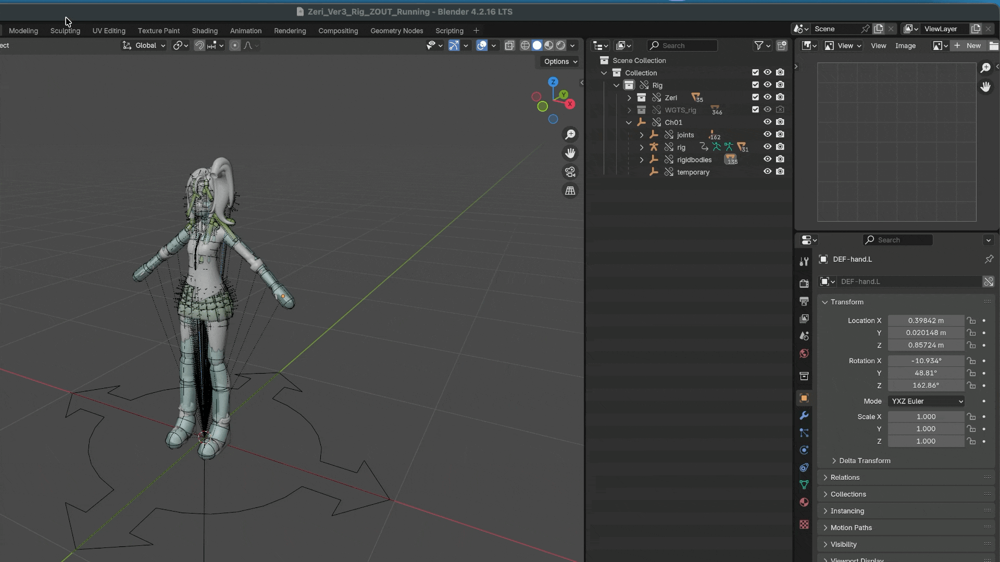

场景设置
该面板提供了配置 时间轴（Timeline）、刚体世界（Rigid Body World） 以及 烘焙（Bake） 的入口。

时间轴
时间轴 部分用于显示和编辑基本的动画帧设置：
Current Frame：显示场景时间轴的当前帧。Start/End：定义预览和烘焙物理模拟的播放范围。
这些值与 Blender 的主时间轴同步。
刚体世界
Blender 的刚体系统依赖于一个场景级容器 刚体世界（Rigid Body World），它管理：
全局模拟设置（求解迭代次数（solver iterations）、子步数（substeps）、重力（gravity））
存放刚体（Rigid Body）的集合
存放刚体约束（Rigid Body Constraints）的集合
本插件会自动管理这些设置，以保证一致性。
更新刚体世界
Blender 要求所有刚体和约束都必须放置在 刚体世界（Rigid Body World） 所指定的集合中。
点击 以将场景与刚体系统同步，确保所有插件对象都正确注册到刚体世界所使用的集合中。

该操作将会：
确保场景中存在有效的 刚体世界（Rigid Body World）
缺少集合时，创建并分配必要的集合
将所有 刚体（Rigid Body） 添加到世界集合中
将所有 刚体约束（Rigid Body Constraint） 添加到约束集合中
修复因以下原因导致的断链引用：
链接文件
库覆盖
实例化集合
备注
如果按钮显示警告图标，说明 刚体世界（Rigid Body World） 的设置与推荐默认值不同，需要更新。
该操作可随时安全运行，建议在场景结构发生变化时使用。
备注
为什么需要
Blender 的刚体系统依赖于两个内部集合：
存放所有刚体的集合
存放所有刚体约束的集合
当骨架被链接、复制或覆写时，这些引用可能会变得过时或无效。
操作会重建这些引用，并确保所有插件对象正确注册到模拟系统中。
模拟质量设置
以下参数用于控制模拟的精度与稳定性：
：每帧的物理子步数。值越高，快速移动或轻量物体的稳定性越好。
：每个子步的求解迭代次数。值越高，约束求解越精确，但会牺牲性能。
备注
这些参数对应 Blender 的 Bullet 物理求解器设置。
插件根据经验为这些参数设置了默认值，以在稳定性和性能之间取得平衡。
烘焙
刚体模拟可以缓存，以实现稳定的播放和渲染。
：将当前帧范围内的刚体模拟烘焙到 Blender 的 点缓存（Point Cache） 中。
：清除烘焙缓存，并恢复为实时模拟。
当存在烘焙时：
播放时间轴时不再重新计算物理
模拟结果是确定的
动画播放时性能提升
重要
如果你需要调整刚体或约束，请先删除烘焙。
工作流程注意事项
确认模拟结果符合预期后再进行烘焙。
在复制、链接或重新组织场景结构后，建议运行 。
在多文件工作流中，使用 或 后，请运行 以避免引用断链。